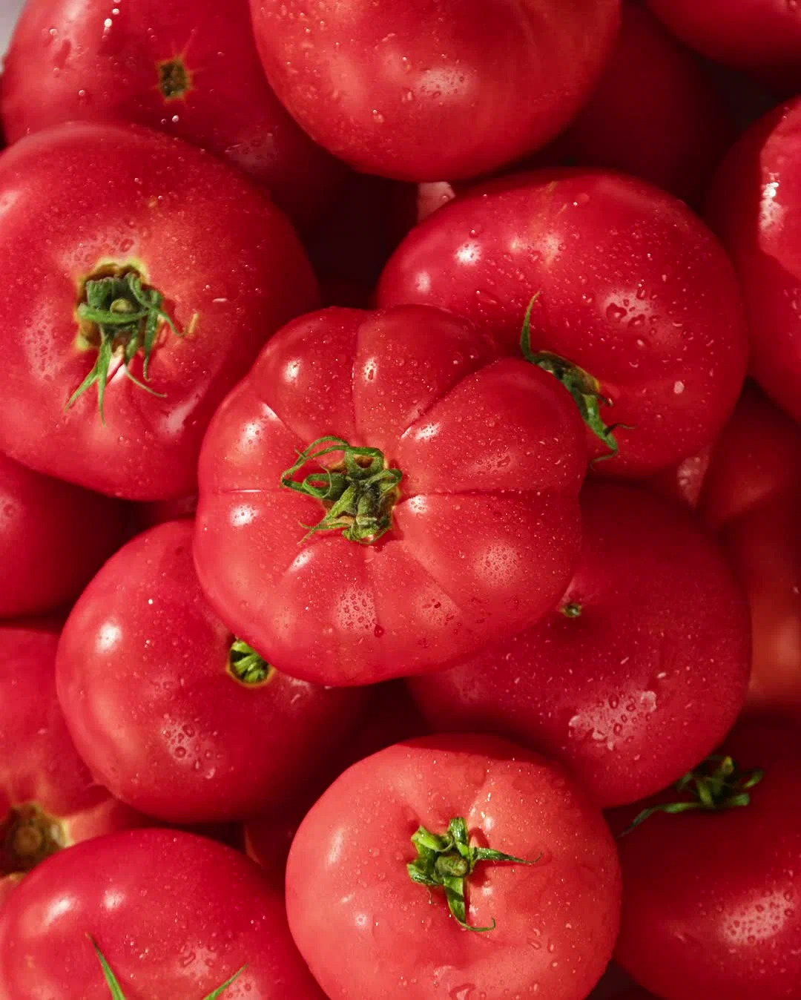
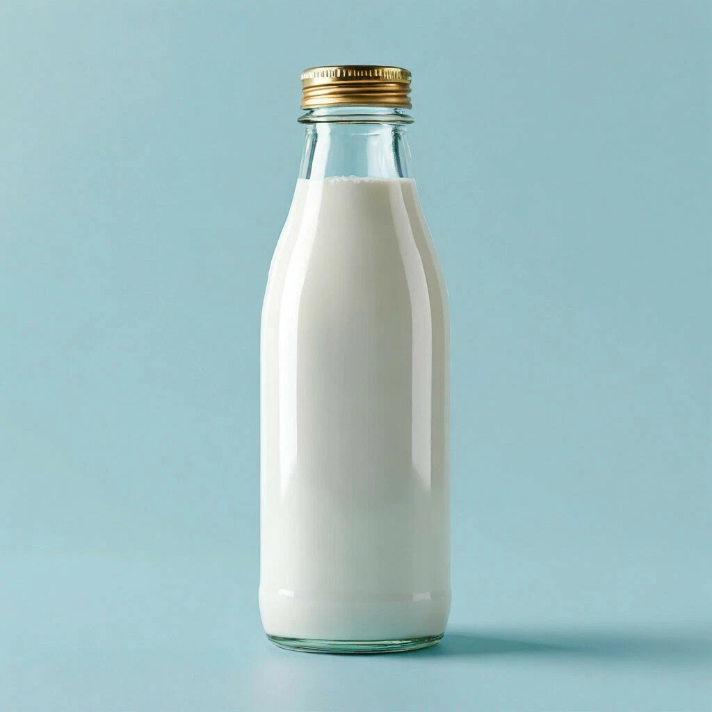
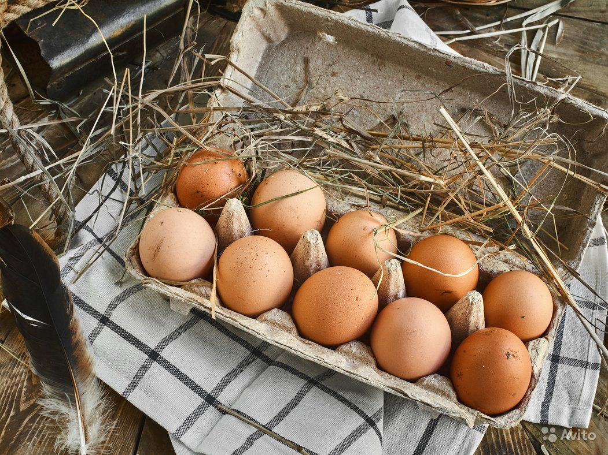
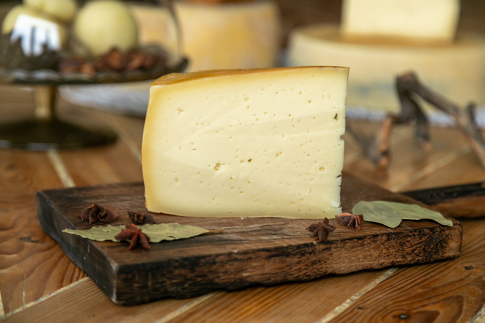
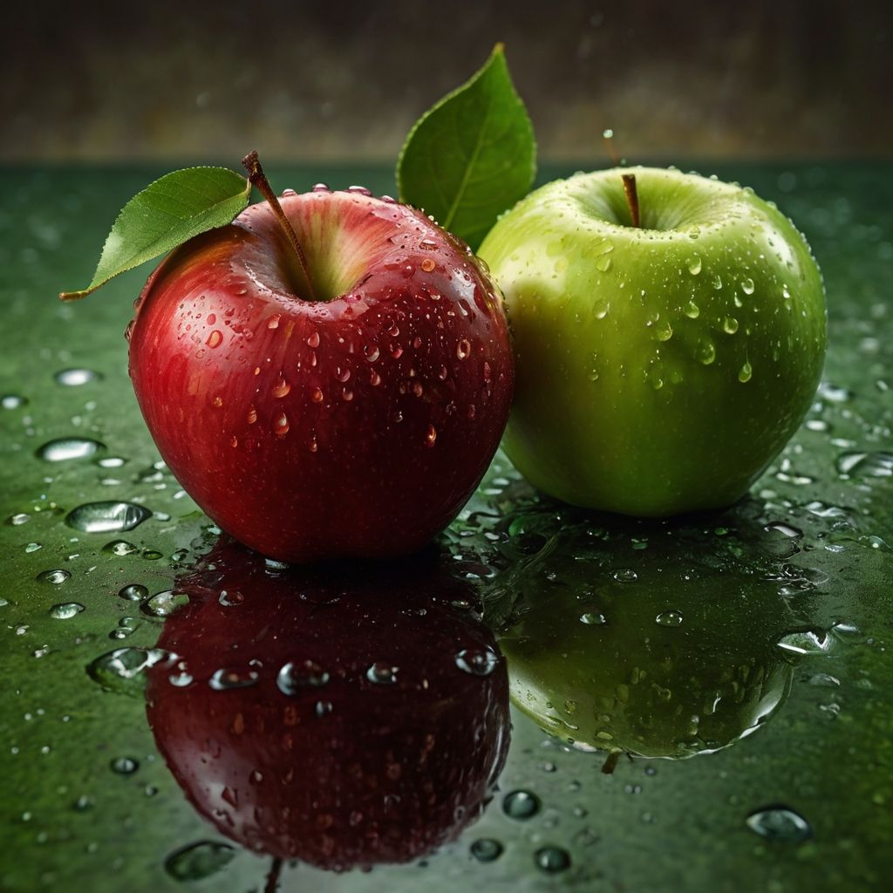
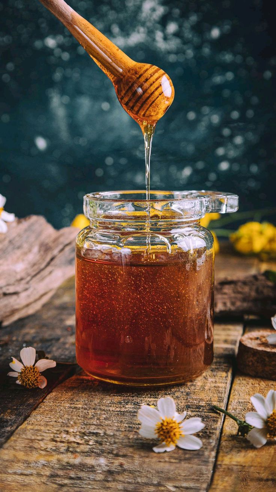
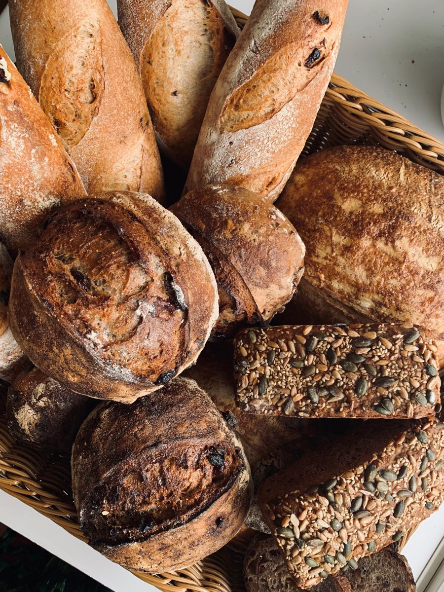

ОВОЩИ
Ферма «Зелёный луг»
Сезонные овощи, выращенные с вниманием к качеству и натуральному вкусу.
Смотреть продукциюНачните вводить название товара или фермы
Небольшие хозяйства, семейные производства и люди, которые вкладывают заботу в каждый продукт. Знакомьтесь с теми, у кого мы выбираем самое лучшее.
У каждого хозяйства своя история и свой вкус.

Сезонные овощи, выращенные с вниманием к качеству и натуральному вкусу.
Смотреть продукцию
Молочная продукция с простым составом и привычным домашним вкусом.
Смотреть продукцию
Свежие деревенские яйца для завтраков, домашних блюд и выпечки.
Смотреть продукцию
Сыры, в которых главное — качество ингредиентов и внимание к деталям.
Смотреть продукцию
Сочные сезонные фрукты, собранные в период их естественной зрелости.
Смотреть продукцию
Ароматный цветочный мёд и продукты пчеловодства с натуральным вкусом.
Смотреть продукцию
Ремесленная выпечка, созданная с вниманием к традициям и качеству.
Смотреть продукцию